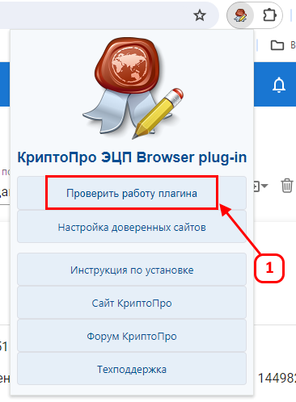
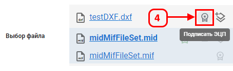
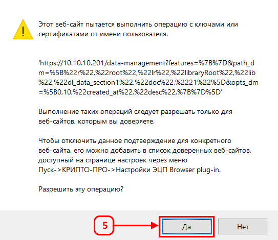
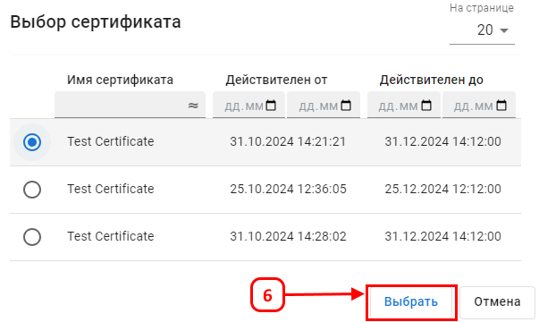
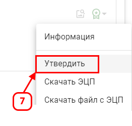

Активация функционала электронной цифровой подписи (ЭЦП)
Предварительная установка плагина КриптоПро CSP
Перед использованием функционала ЭЦП выполните установку плагина КриптоПро CSP:
- Перейдите на страницу загрузки плагина КриптоПро CSP по ссылке.
- Выберите версию, подходящую для вашей операционной системы, скачайте установочный файл и запустите его.
- Следуйте инструкциям установщика и завершите процесс нажатием кнопки Готово.
- Установите браузерный плагин КриптоПро по ссылке.
- Перезапустите браузер и войдите в систему.

- При первом входе в систему появится запрос на разрешение использования КриптоПро CSP. Нажмите Разрешить.
- Введите пароль для доступа к сертификату в открывшемся окне.
После завершения установки и настройки плагина КриптоПро CSP в интерфейсе системы появится кнопка Подписать ЭЦП, которая позволяет подписывать файлы с использованием сертификата усиленной квалифицированной подписи.
Применение функционала ЭЦП
Для подписания файла в системе выполните следующие действия:
- Перейдите в библиотеку документов.
- Выберите существующий документ или загрузите новый файл для подписи.
- Нажмите кнопку Подписать ЭЦП (4) в меню документа.

- В появившемся диалоговом окне подтвердите действие, нажав Да.

- Выберите сертификат из предложенного списка (6) и введите пароль для подписи.

После успешного завершения всех этапов иконка подписи изменится на зеленую. Это означает, что файл успешно подписан. Теперь можно просмотреть, кто подписал документ, и скачать электронную подпись.
Если файл уже подписан, его можно утвердить, добавив дополнительную подпись. Для этого:
- Нажмите на значок подписи.
- Выберите Утвердить (7).

- Выберите ваш сертификат и подтвердите действие вводом пароля.
Утверждение файла добавляет новую подпись к уже подписанному документу, сохраняя все предыдущие подписи.